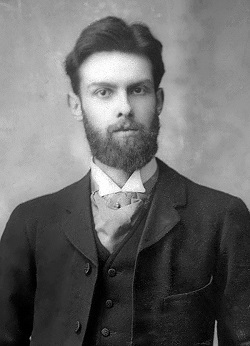
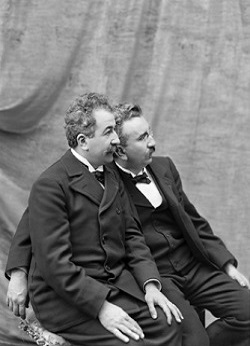

Első film
Az első filmnek a Roundhayi kerti jelenetet tartják (1888). A mozi születésének azt a pillanatot tekintjük, amikor a kinematográf feltalálói először tartottak vetítést fizető közönségnek.
Állóképtől a mozgóképig

A laterna magica segítségével már a 17. században lehetséges volt rajzolt képeket úgy kivetíteni, hogy azok a mozgás illúzióját keltsék. Ennek ellenére a 19. század második feléig az átlagember (a mai viszonyokhoz képest) ritkán látott minőségi, színes képet. Leginkább templomban vagy képtárakban találkozhatott velük. A 19. század végén a technika – azon belül különösen a nyomdászat és a fényképészet – ugrásszerű fejlődésével elterjedtek a családi fotók, képeslapok, képes újságok - a mindennapi élet részévé vált a kép. Ezzel megteremtődtek a mozgóképgyártás technikai és esztétikai alapfeltételei.
Eadweard Muybridge 1878-ban Leland Stanford megbízásából 24 egymás mellé helyezett fényképezőgéppel fázisfelvételeket készített egy száguldó lóról, hogy megtudja, létezik-e olyan pillanat, amikor a vágtató ló mind a négy lába elemelkedik a földtől. A kísérlet felkelti Le Prince – Daguerre közeli ismerőse és szenvedélyes fényképész – érdeklődését és 1886-ban Amerikába utazik, hogy találkozhasson Muybridge-dzsel. Ez a találkozás megerősíti abban az elképzelésében, hogy egy olyan gépet kellene készíteni, ami egymaga képes gyors egymásutánban felvételeket készíteni. Ezek a felvételek aztán visszapörgetve a mozgás látszatát keltik. Még ugyanabban az évben bejelenti a szabadalmát – egy olyan gépet, ami másodpercenként 20 képet képes fényérzékeny szalagra rögzíteni és a képeket vetítéssel láthatóvá is tudja tenni. A találmánynak az „animated pictures” („megelevenített képek”) nevet adja. Így La Prince a mozgókép első, valódi feltalálója. Az által készített mozgóképek („családi jelenet a roundhay-i kertben”, „forgalom a leedsi hídon”) a világ első filmjei. A gép azonban elveszett, mielőtt elterjedt volna a világban.
1894-ben New Yorkban Edison üzembe helyezi a kinetoscope-ját. Ez tulajdonképpen egy szekrény, amibe az érdeklődő – pénzbedobás után – belekukucskálva egy filmszalagra rögzített mozgóképet láthatott. Le Prince még kezdetleges papírszalagot használt, de Edison gépében már a Kodak gyár által tömegesen előállított, fényképezésre alkalmas rugalmas hártya pörög (film=hártya). Antoine Lumière francia fényképlemez- és fotocikkgyáros meglátja az Edison-féle gépben az üzleti lehetőséget, ezért megbízza fiait (Auguste és Louis), hogy azt alakítsák át úgy, hogy a filmszalagot kivetítve egy időben egyszerre több ember is nézhesse. A Lumière fivérek 1895-ben tartják az első nyilvános vetítést és ezzel mint a mozgókép föltalálói bevonulnak a történelembe.
Megszólal a film
A fonográf megjelenése után Muybridge javasolta Edisonnak, hogy a két találmányt kombinálják. 1904-ben Oscar Mester német producer saját fejlesztésű berendezésével, a biofonnal kápráztatta el a St. Louis-i világkiállítás látogatóit, mint új hangosítási kísérletével. Ez az eljárás azonban még nem nevezhető hangosfilmnek, hiszen nem maga a film volt hangosított. Ezért az eljárás neve: hangzófilm. A hangszóró a lemezjátszó tölcsére volt, amelynek hangját sokszor elnyomta a mozigép kattogása. Közben kísérleteztek az igazi megoldáson: a képek és a hangok egyidejű, egyetlen celluloid szalagra rögzítésén.
 
Színes film
1902-ben készült az első színes film, de az eljárást feltalálója Edward Turner brit fotográfus a szabadalmaztatott módszere teljes kifejlesztése előtt elhunyt. A filmet digitális technológia segítségével sikerült az eredeti leírás alapján elővarázsolni. Legelőször 2012. szeptember 12-én mutatták be a londoni Tudomány Múzeumában megrendezett bemutatón.
1907-ben a Lumière fivérek bemutatták az autokróm eljárást. A kifejezés jelentése önszínesítő. Réteggel bevont üveglapokat használtak. A rétegekbe apró piros, kék és zöld színezésű keményítőszemcséket ágyaztak. A színes szemcsék csak meghatározott színű fényt eresztettek át. A réteg fölé a fekete-fehér fotoemulziót öntötték, és az így kapott nyersanyagot a szemcséken keresztül világították meg. Így megkapták a diapozitívot.
A számítógépes film
Az 1980-as – 1990-es évekre a számítógépek fejlődésével egyre inkább elterjedt a CGI (Computer-Generated Imagery – számítógép generálta ábrázolás). Ez egyre inkább meggyőzőbbé, könnyebbé és olcsóbbá vált, így egyre inkább kiszorította a maketten alapuló ábrázolást. Másrészt ez lehetőséget adott olyan dolgok filmre vitelében amik addig elképzelhetetlennek voltak (például fantasy és sci-fi filmekben). Az ezredfordulóra elmondhatjuk hogy egy nagy költségvetésű filmforgatás jobban különbözik az előzőektől, mint bármikor. A színészek üres zöld vagy kék háttér előtt játszanak, ugyanis a díszleteket csupán az utómunkálatok során helyezik fel. Gyakoriak a látványos, 3 dimenzióban létrehozott, tágas, távlatos hátterek, sőt szereplők. A nyaktörő mutatványokban vagy egy nem valóságos elemmel történő komolyabb interakció során a színészeket nem kaszkadőrökkel, hanem számítógépes modellel helyettesítik, ahol csak lehet. Az élethűség kedvéért a színészek testét digitalizálják, majd, ha nem számítógéppel könnyen létrehozható mozgásról van szó, akkor a kaszkadőrök mozdulatait is, azokat pedig összeillesztik.
A Toy Story – Játékháború volt 1995-ben az első egész estés, teljes időtartamában számítógéppel készített film. 2002-ben A Gyűrűk Ura második részében sok ezernyi statiszta nélkül hoztak létre élethű méretű hadsereget több hónapnyi számítógépes renderelés után. Egy évvel korábban már az animációs filmek terén elállította a lélegzetet a Final Fantasy – A harc szelleme egész estés, teljes egészében számítógéppel készült, csaknem fotorealisztikus ábrázolásával.